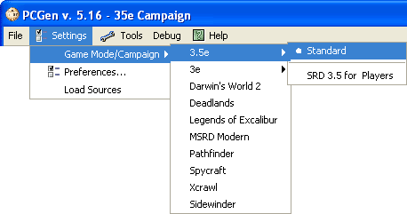
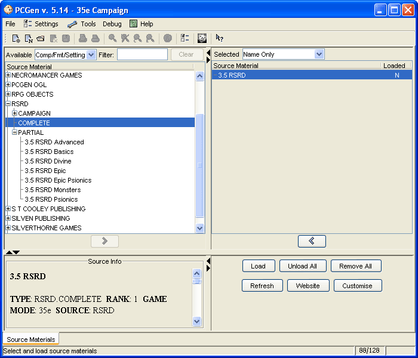

When PCGen starts up it displays the PCGen splash screen.
After it automatically disappears, you will see the PCGen program window and will be on the Source Materials tab. [Tabs for the Source Material and Loaded Characters default to the bottom of the screen.]
First you should choose your desired Game Mode.
As of now PCGen supports the following Game Modes:

Now you can load sources appropriate to your chosen Game Mode/Campaign.
The Window is broken into 4 panes. The sources Available to be used with PCGen, the sources you have Selected for use in Character Generation, the Source Info pane and the button pane.

If you have never started PCGen before, the right hand Selected pane will be empty.
The upper-left
Available
frame is a tree of
publishers.
Clicking the "+" sign next to a publisher will expand the tree and
show the subgroups for that publisher.
When you select a source of interest, the information about the source appears in the lower left Source Info frame.
Click the Add (">") button at the top of the upper left frame to add the selected source to the Selected pane. You can also double-click the source to add it. You can also add all sources from a company or setting by selecting the company/setting instead of the product and then clicking the Add button or double clicking the company/setting.
If, for instance, you wanted to create a character for the System Reference Document , you would expand the "SRD", and select the "3.0 SRD".
Do this for every source you need to build your character.
Note: If the character you want to build requires information other than that found in the core player's book, (i.e. it comes from a specific campaign world, has a prestige class from a supplemental book, or equipment from a magazine article) you will need to load the source which has this information.
Once all the sources you need are in the upper right Selected pane, click the Load button in the lower right frame. This will load all sources in the upper right Selected pane.
The Loaded column in the Selected pane will then change to "Y"
Various pop ups may come up detailing some licensing information and publisher information, just close those (you can also uncheck the "show at start up" option, so that it only runs once).
You may now create your new character.